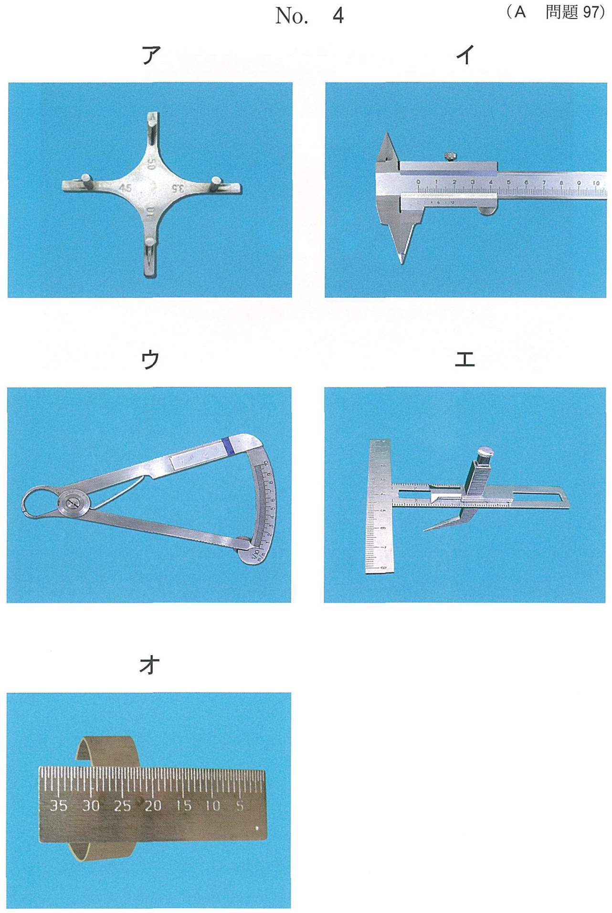
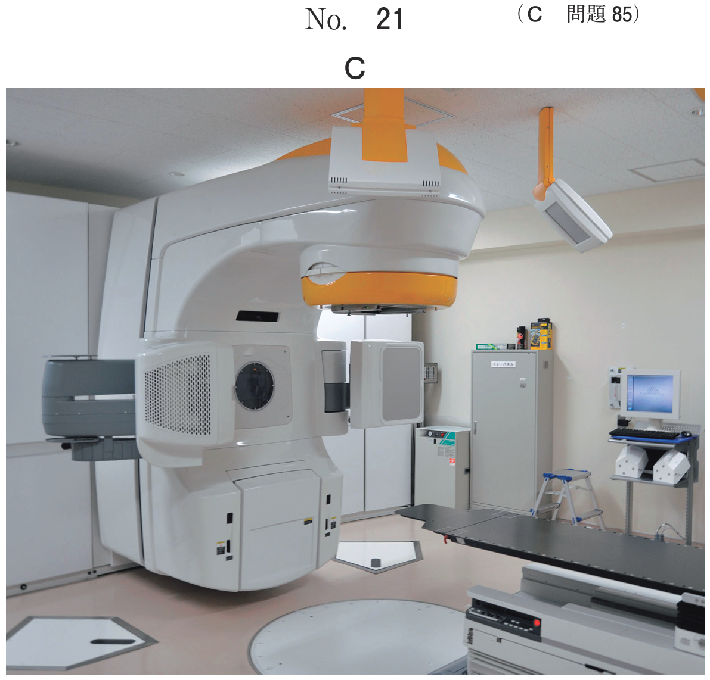

心肺蘇生法（CPR）は、一次救命処置（BLS）と二次救命処置（ALS）に分けられる。
| 一次救命処置（BLS） | 二次救命処置（ALS） | |
|---|---|---|
| 実施者 | 一般市民・医療従事者 | 医療従事者 |
| 内容 | 意識の確認、通報・AED手配、胸骨圧迫、人工呼吸、AED | 気管挿管、薬剤投与、輸液、電気的除細動（手動式） |
| 器具 | AED、ポケットマスク、バッグバルブマスク | 喉頭鏡、気管チューブ、薬剤、除細動器 |
一次救命処置で行うのはどれか。2つ選べ。
【解説】一次救命処置（BLS）に含まれるのは胸骨圧迫（c）と意識の確認（d）。輸液（a）、気管挿管（b）、薬剤投与（e）はいずれも二次救命処置（ALS）で行う内容。
胸骨圧迫は心肺蘇生法の最も重要な部分であり、胸骨の下半分を圧迫して心臓や重要臓器に血液を送り出す手技である。
| 項目 | 成人 | 小児 | 乳児 |
|---|---|---|---|
| 圧迫部位 | 胸骨の下半分 | 胸骨の下半分 | 両乳頭を結ぶ線の少し足側 |
| 圧迫の深さ | 約5cm（6cmを超えない） | 胸の厚さの約1/3 | 胸の厚さの約1/3 |
| 圧迫のテンポ | 100〜120回/分 | ||
| 圧迫と人工呼吸の比 | 30：2 | 30：2（救助者1人）/ 15：2（救助者2人以上） | 30：2 / 15：2 |
| 手技 | 両手の手根部 | 片手または両手 | 2本指法または胸郭包み込み両母指圧迫法 |
| 方法 | 手技 | 適応 |
|---|---|---|
| 頭部後屈−あご先挙上 | 片手で頭部を後方に押し、もう一方の手であご先を挙上 | 通常の気道確保（標準法） |
| 下顎挙上 | 両側の下顎角部に指をかけ、下顎を前上方に挙上 | 頸椎損傷が疑われる場合 |
人工呼吸ができない状況では胸骨圧迫のみを行う。
突然の心停止の最も一般的な原因は心室細動（VF）であり、心臓が痙攣するのみで十分な血流量を拍出できない。VFに対する最も効果的な治療法は電気的除細動である。
| 心電図リズム | 除細動 | 特徴 |
|---|---|---|
| 心室細動（VF） | 適応 | 心室の無秩序な電気活動。最も多い突然死の原因 |
| 無脈性心室頻拍（pulseless VT） | 適応 | 脈のない心室頻拍 |
| 無脈性電気活動（PEA） | 禁忌 | 心電図上は波形があるが脈なし |
| 心静止（asystole） | 禁忌 | フラットライン |
心肺蘇生に使用する機器の写真（別冊No.5）を別に示す。
使用後に直ちに行うのはどれか。1つ選べ。

【解説】写真はAED（自動体外式除細動器）。AEDによる電気ショック実施後は、ただちに胸骨圧迫（e）からCPRを再開する。意識（a）・呼吸（b）・脈拍（c）の確認や人工呼吸（d）ではなく、まず胸骨圧迫を優先する。2分間のCPR後に再度AEDが自動で心電図を解析する。
外傷などによる開口障害や、気道内異物が除去できないために気管挿管ができず、窒息の危機が迫っているときに行う緊急気道確保手技である。
甲状軟骨と輪状軟骨の間の隙間にある輪状甲状靭帯（輪状甲状間膜）に穿刺・切開を行う。この部分が上気道に達するのに最短の距離で、太い血管や神経も少なく比較的安全に穿刺できる。
| 構造物 | 頸椎レベル | 備考 |
|---|---|---|
| 舌骨 | C3 | — |
| 甲状軟骨 | C4-5 | 喉頭隆起（のどぼとけ） |
| 輪状甲状靭帯 | — | 穿刺・切開部位 |
| 輪状軟骨 | C6 | — |
| 気管軟骨 | C7以下 | — |
前頸部の模式図（別冊No.27）を別に示す。
輪状甲状間膜切開を行う場合の皮膚切開部位はどれか。1つ選べ。

【解説】輪状甲状間膜切開は甲状軟骨と輪状軟骨の間で行う。前頸部の模式図において、甲状軟骨（のどぼとけ）の下方、輪状軟骨の上方の隙間が「エ」の位置に相当する。この部位は上気道に達する最短距離であり、太い血管や神経が少ないため緊急気道確保に適している。
| 項目 | 数値 |
|---|---|
| 胸骨圧迫の深さ（成人） | 約5cm（6cmを超えない） |
| 胸骨圧迫のテンポ | 100〜120回/分 |
| 圧迫：換気の比 | 30：2 |
| 呼吸確認の時間 | 10秒以内 |
| 人工呼吸の送気時間 | 約1秒 |
| AED後のCPR継続時間 | 2分間 |
| 救助者の交代タイミング | 2分ごと（5サイクルごと） |